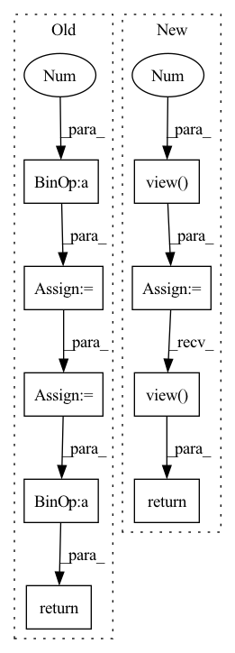

Pattern ID :946
Before Change
def forward(self, x):
device = x.device
half_dim = self.dim // 2
emb = math.log(10000) / (half_dim - 1)
emb = torch.exp(torch.arange(half_dim, device=device) * -emb)
emb = x[:, None] * emb[None, :]
emb = torch.cat((emb.sin(), emb.cos()), dim=-1)
return emb
class Mish(nn.Module):After Change
def forward(self, input):
shape = input.shape
sinusoid_in = torch.ger(input.view(-1 ) .float(), self.inv_freq)
pos_emb = torch.cat([sinusoid_in.sin(), sinusoid_in.cos()], dim=-1)
pos_emb = pos_emb.view( *shape, self.dim)
return pos_emb
class Swish(nn.Module):In pattern: SUPERPATTERN
Frequency: 3
Non-data size: 9
Instances Fragment ID: 3467844
Project Name: janspiry/image-super-resolution-via-iterative-refinement
Commit Name: a843610e321ec7e1898e97dd495f8991182b8b87
Time: 2021-07-30
Author: lw_jiang@foxmail.com
File Name: model/unet.py
M Class Name: SinusoidalPosEmb
N Class Name: TimeEmbedding
M Method Name: forward(2)
N Method Name: forward(2)
M Parent Class: nn.Module
N Parent Class: nn.Module
M File Name: model/unet.py
N File Name: model/unet.py
M Start Line: 37
M End Line: 42
N Start Line: 32
N End Line: 36
Before Change
def forward(self, x):
device = x.device
half_dim = self.dim // 2
emb = math.log(10000) / (half_dim - 1)
emb = torch.exp(torch.arange(half_dim, device=device) * -emb)
emb = x[:, None] * emb[None, :]
emb = torch.cat((emb.sin(), emb.cos()), dim=-1)
return emb
class Mish(nn.Module):After Change
def forward(self, input):
shape = input.shape
sinusoid_in = torch.ger(input.view(-1 ) .float(), self.inv_freq)
pos_emb = torch.cat([sinusoid_in.sin(), sinusoid_in.cos()], dim=-1)
pos_emb = pos_emb.view( *shape, self.dim)
return pos_emb
class Swish(nn.Module): Fragment ID: 3467847
Project Name: janspiry/image-super-resolution-via-iterative-refinement
Commit Name: 519d366759ea639a68262c20661fa8af7e85cfc6
Time: 2021-07-30
Author: jiangliangwei@tetras.com
File Name: model/unet.py
M Class Name: SinusoidalPosEmb
N Class Name: TimeEmbedding
M Method Name: forward(2)
N Method Name: forward(2)
M Parent Class: nn.Module
N Parent Class: nn.Module
M File Name: model/unet.py
N File Name: model/unet.py
M Start Line: 37
M End Line: 42
N Start Line: 32
N End Line: 36
Before Change
k = self.NIN_1(h)
v = self.NIN_2(h)
w = torch.einsum("bchw,bcij->bhwij", q, k) * (int(C) ** (-0.5) )
w = torch.reshape(w, (B, H, W, H * W))
w = F.softmax(w, dim=-1)
w = torch.reshape(w, (B, H, W, H, W))
h = torch.einsum("bhwij,bcij->bchw", w, v)
h = self.NIN_3(h)
return x + h
class Upsample(nn.Module):After Change
attn = torch.einsum(
"bnchw, bncyx -> bnhwyx", query, key
).contiguous() / math.sqrt(channel)
attn = attn.view( batch, n_head, height, width, -1 )
attn = torch.softmax(attn, -1)
attn = attn.view(batch, n_head, height, width, height, width)
out = torch.einsum("bnhwyx, bncyx -> bnchw", attn, value).contiguous()
out = self.out(out.view( batch, channel, height, width) )
return out + input
class ResnetBlocWithAttn(nn.Module): Fragment ID: 3467841
Project Name: janspiry/image-super-resolution-via-iterative-refinement
Commit Name: 1a5a8bc409a8b8e072eb2bf25330d4662fd279c4
Time: 2021-08-09
Author: lw_jiang@foxmail.com
File Name: model/ddpm_modules/unet.py
M Class Name: AttnBlock
N Class Name: SelfAttention
M Method Name: forward(2)
N Method Name: forward(2)
M Parent Class: nn.Module
N Parent Class: nn.Module
M File Name: model/ddpm_modules/unet.py
N File Name: model/ddpm_modules/unet.py
M Start Line: 125
M End Line: 136
N Start Line: 111
N End Line: 128